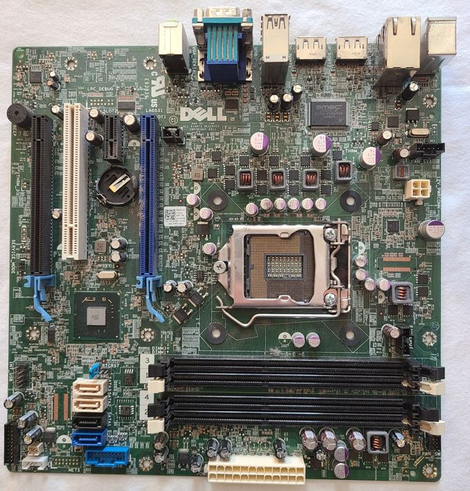
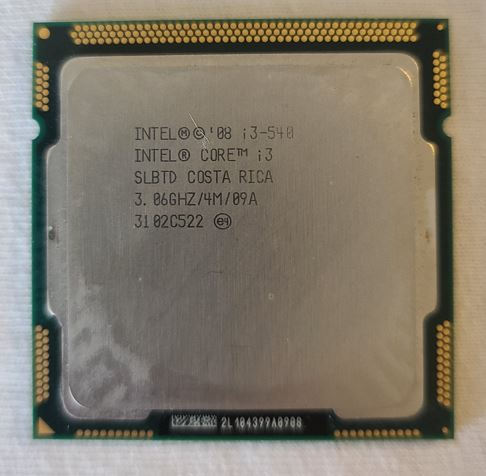
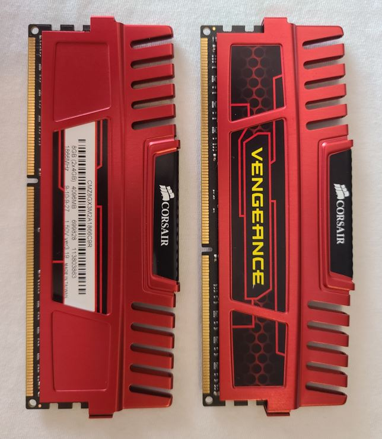
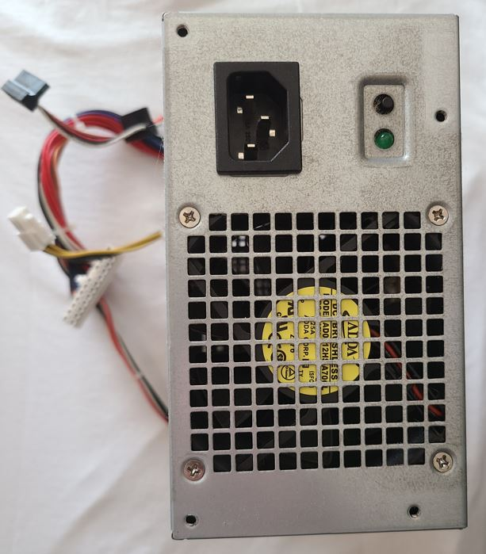
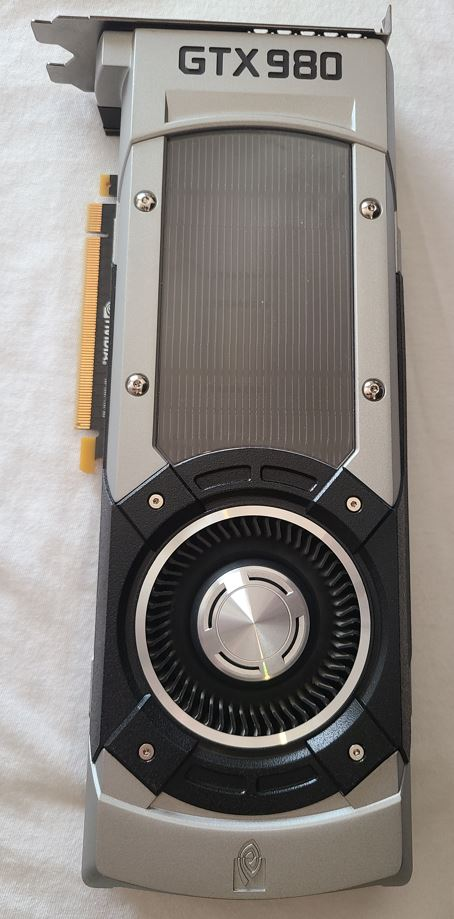
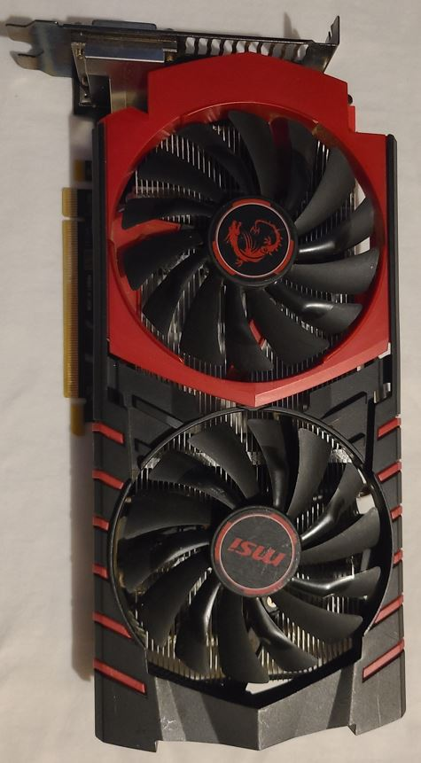
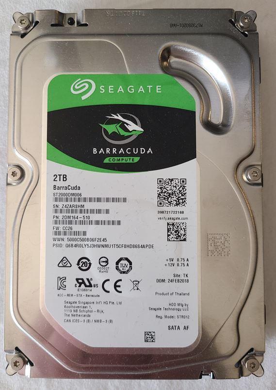
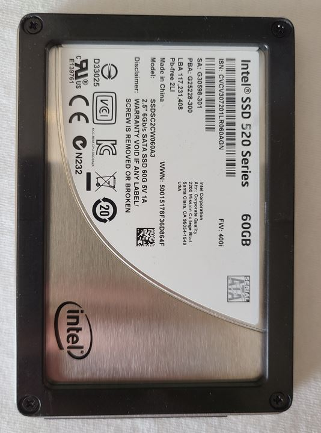

Build Your Own Gaming Computer

Motherboard
The motherboard is the foundation of your entire computer. Because of this, you need to be careful when selecting the motherboard for your build. The motherboard CPU socket has to be compatible with both the CPU socket on the motherboard, and the CPU itself. Just because a CPU fits, doesn't mean the motherboard can support it. Keep the ram you want to use in mind when selecting the motherboard as well. The motherboard can limit both the type of ram, as well as the amount of ram. Some motherboards support 32GB of ram, while other support 64GB and so on.CPU
The cpu, or the processor, is the main control for the computer. It functions like the brain, handling algorithms and I/O functions. There are two main factors when selecting a processor, after making sure that it is compatible with your motherboard. The first thing to consider is the clock speed. The clock speed is generally measured in gigahertz (gHz). The clock speed determines how many cycles per second the cpu can handle. For ever 1gHz, the processor can handle 1 billion cycles. The hire the number, the more cycles the processor can handle, but keep in mind you have to keep the processor cool with a cpu cooler, and the higher the number, the hotter the cpu will get. The second consideration is how many cores the cpu has. The more cores, the better the computer will multitask or handle higher demanding programs. For gernal gaming, we consider 4 cores to be the minimum when building an entry level gaming pc.


Ram
RAM or random access memory, is a temporary data storage point. Processes and commands are temporarily stored in the ram, and then access and used by the processor. Ram is measured in 2 ways, the first is the amount, generally measured in gigabytes (GB). This is the amount of data that can be stored temporarily on the memory. The second is the speed, measured in megahertz (MHz). The minimum some games will allow you to play on is 8GB. We have never built a computer for gaming with less than 16GB of ram, but that extra overhead is a personal preference. Keep in mind when selecting ram, your motherboard could be your deciding factor. Make sure your motherboard can handle both the amount of ram, and type of ram. The most common ram types are DDR3 (older) and DDR4 (newer) and they are not interchangeable. The sockets have different mounting points.Power Supply Unit
When you select your power supply unit, or PSU, you need to consider more than just price. You need to check what the minimum and suggested power ratings for your motherboard, and your graphics card. You also need to consider what connectors you will need. Some graphics cards take a single 6 pin connector, some take 2 6 pin connectors, and some take an 8 pin connector. Consider if you will be using the same graphics card for a long time, or if you will be changing it out after just a few months of gaming. If you will be changing out your graphics card soon, consider what connectors the new one will need.



Graphics Card/ GPU
The graphics card, or GPU, is one of the biggest considerations when building a gaming pc. The graphics card, is like a small computer inside your computer that only handles video output. The graphics card, has its own processor (graphical processing unit), and ram (v-ram). Some games require a minimum of 4gb v-ram to run. Consider the games you want to play before selecting your graphics card, and check what their minimum and suggested requirements are. None of our computers have had a gpu with less than 4gb of v-ram. The architecture of your card and the amount of v-ram both directly impact the frames per second (FPS) you can expect out of your computer. Not all cards with the same v-ram specs are equal. The GTX 980 with 4gb of v-ram in one of our commuters runs around 150fps when bench-marking, but the r7 370 with 4gb of v-ram runs about 50fps when bench-marking.Storage
When deciding on what you want to use for storage, speed is the biggest factor. Hard drives (or HDDs and the left image) are an aging technology. They use spinning metal disks to store the data. When the computer wants to access that data, the reader or head has to find that memory segment on the disk. However, HDDs are cheap and easy to come by because they have been in general use for so long. The alternative, is a solid state drive (SSD and the right most image). An ssd, as the name suggests, doesn't use spinning disks, or any moving parts. They use flash memory like a USB thumb drive uses and are much faster to read and write data to. They are also more power efficient than HDDs. The only thing to consider here is how much memory do you need. Windows 10 alone requires 20gb of storage. Then you need to factor in how many games, and what games you want to be able to store on your computer. When we build our computers the minimum we consider is 500gb.

